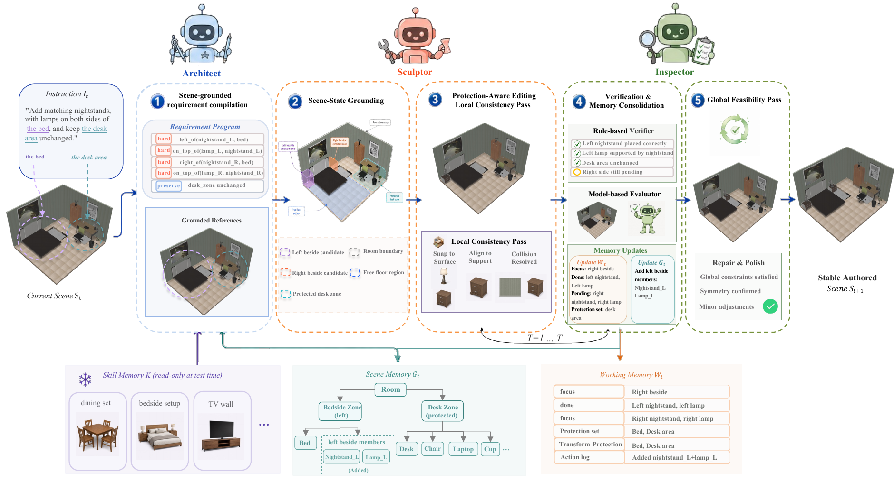
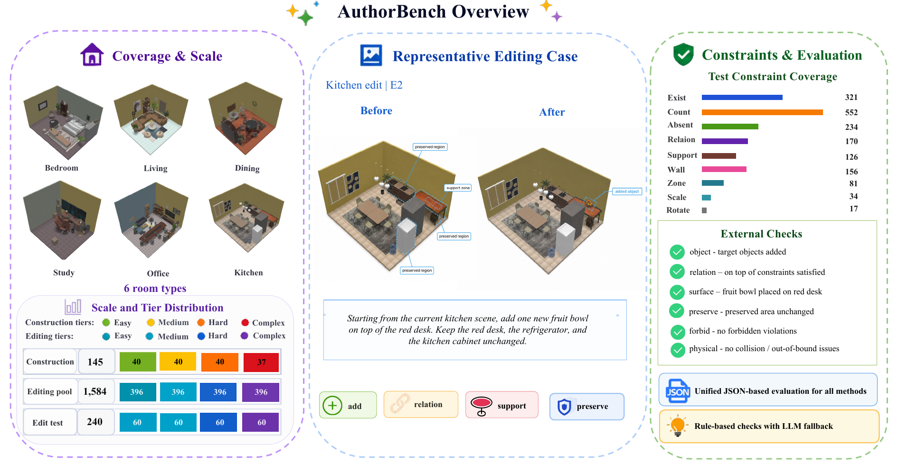
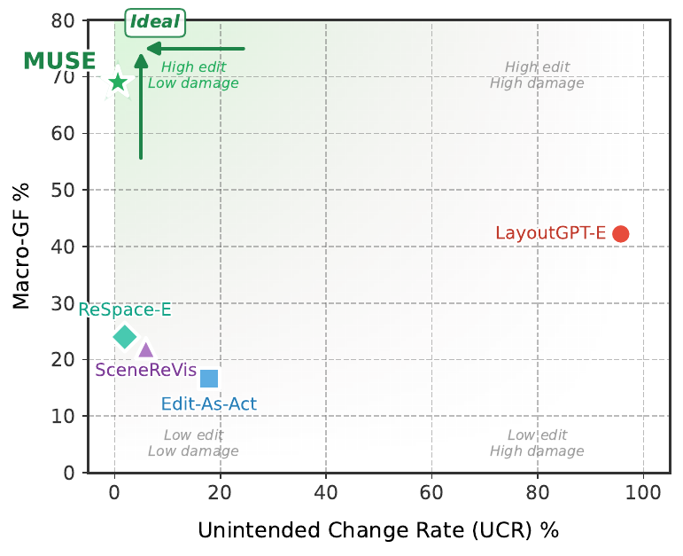
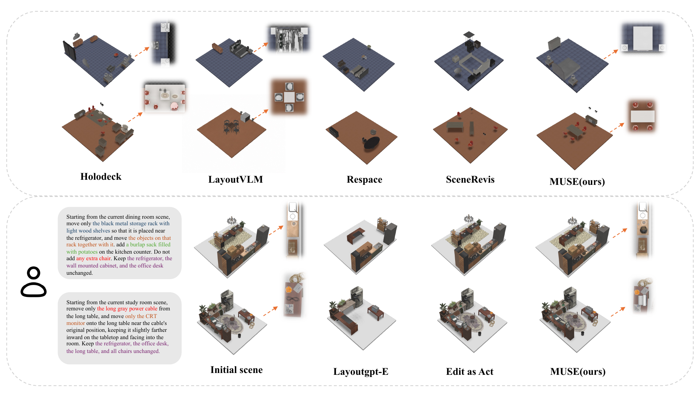
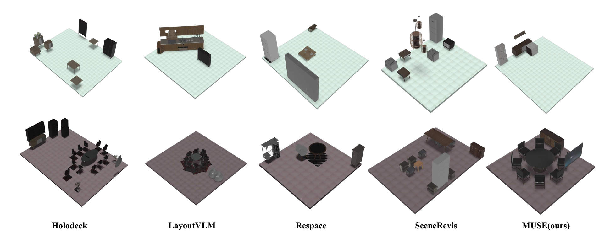
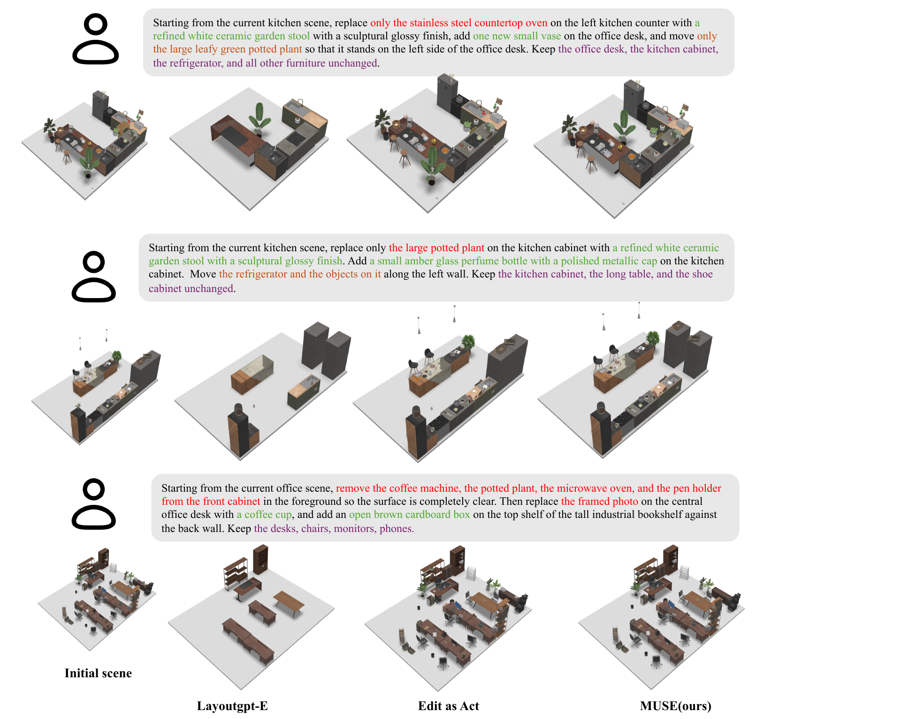

Construction
80.7%
All-Goal success, compared with 37.9% for the strongest one-shot baseline.
Preprint
A memory-grounded agentic framework for verified local construction and preservation-aware editing of 3D indoor scenes.
Text-driven 3D scene generation is a promising technique for digital content creation, embodied AI simulation, and interactive design, yet practical workflows often require refining, extending, or correcting existing scenes while preserving non-target content. Existing methods can produce realistic and structurally plausible scenes, but they generally lack editability with requirement-level state tracking, so part-level failures often lead to full-scene regeneration or manual intervention. To tackle this challenge, we formulate controllable 3D scene authoring as incremental requirement satisfaction, unifying construction and editing. In this paper, we present MUSE, a memory-grounded multi-agent framework in which an Architect compiles instructions into structured requirements, a Sculptor executes local scene operations, and an Inspector verifies each step while updating Working, Scene, and Skill Memory.
To evaluate requirement-level controllability and preservation-aware editing, we introduce AuthorBench, offering 145 constrained construction cases and a 1,584-case preservation-aware editing pool paired with external structured checks. On full construction cases, MUSE improves All-Goal success from 37.9 to 80.7 and surface-constraint fulfillment from 35.0 to 92.6 over the strongest baseline. On a stratified 240-case editing test split, MUSE achieves 49.6 All-Goal success, 99.9 preservation rate, and only 0.6 unintended change rate. Beyond automated metrics, human evaluations on compared local-editing baselines support stronger alignment with user intent, and downstream navigation-proxy tests indicate stronger spatial stability. Combined with ablations validating our memory designs, these results establish MUSE as an effective framework for controllable 3D scene authoring.
MUSE turns scene creation and editing into a closed-loop authoring process over explicit requirements and persistent memory.

AuthorBench evaluates requirement-level scene authoring across construction and preservation-aware editing, using structured external checks rather than internal model state.

MUSE improves completion while preserving non-target scene content and maintaining physical validity.
80.7%
All-Goal success, compared with 37.9% for the strongest one-shot baseline.
92.6%
Surface fulfillment, addressing a major weakness of prior layout methods.
99.9%
Preservation rate with only 0.6% unintended change rate.
96.6%
Construction retention from easy to dense complex cases.

MUSE produces organized layouts in construction and performs precise local edits without rewriting protected scene context.



@article{xu2026muse,
title={MUSE: Agentic 3D Scene Authoring via Memory-Grounded Incremental Requirement Satisfaction},
author={Xu, Ruijie and Zhu, Xinnan and Ying, Jiayu and Dong, Daoguo and Ji, Yuzhou and Tan, Xin},
journal={arXiv preprint},
year={2026}
}